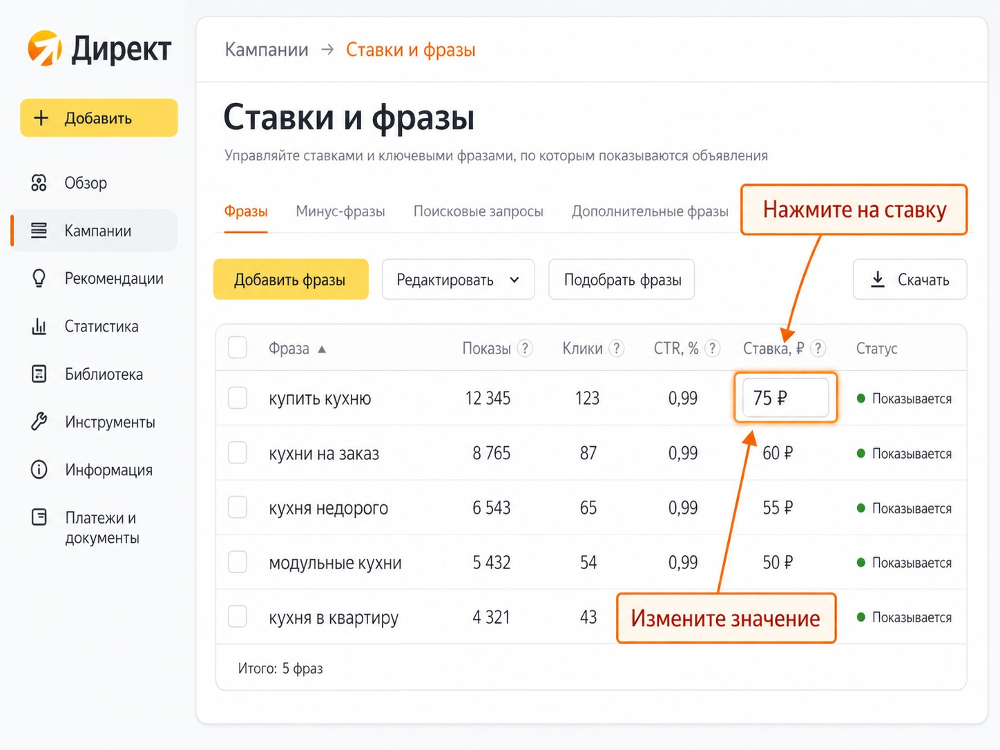
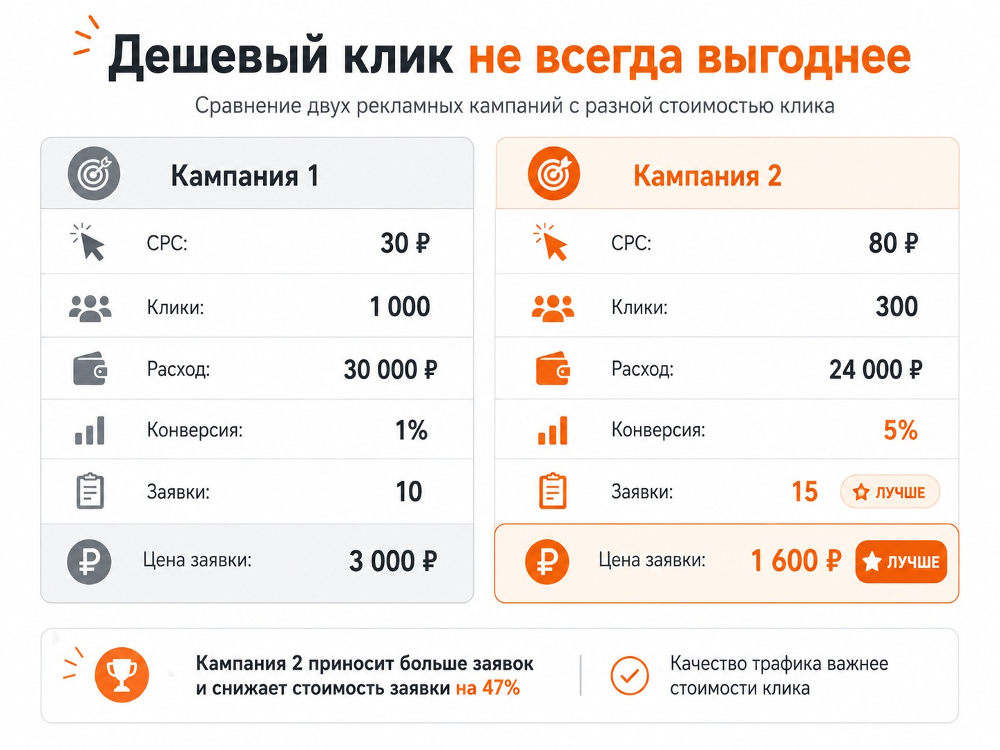

Блог о платном трафике
Цена за клик в Яндекс Директе: что это и как ей управлять
Цена за клик в Яндекс Директе, или CPC, показывает, сколько в среднем рекламодатель платит за переход пользователя по объявлению.
Но здесь есть важный нюанс. Цена клика и ставка - не одно и то же. Ставка показывает, сколько рекламодатель готов заплатить в рамках аукциона, а фактическая стоимость перехода определяется системой при конкретном показе. Она может оказаться ниже установленной ставки. На Поиске при отборе объявлений учитываются ставка, коэффициент качества и прогноз CTR.
Поэтому поставить в настройках 100 рублей за клик еще не означает, что каждый переход будет стоить ровно 100 рублей.
Как рассчитывается CPC
Формула простая:
CPC = расход на рекламу / количество кликов
Если на рекламу потратили 20 000 рублей и получили 400 переходов:
20 000 / 400 = 50 рублей.
Средняя цена клика составила 50 рублей.

Посмотреть этот показатель в Директе можно через раздел «Статистика» - «Мастер отчетов». В набор показателей нужно добавить «Ср. цена клика».
При этом средний CPC может сильно отличаться внутри одной кампании. Один переход может стоить 20 рублей, другой 150 рублей, а среднее значение за период получится, например, 60 рублей.
От чего зависит цена клика в Яндекс Директе
Фиксированного прайса на клики нет. Торги происходят при каждом показе рекламы, поэтому цена постоянно меняется.
На нее влияет сразу несколько факторов.
Конкуренция
Если по одному запросу хотят показываться десятки рекламодателей, конкуренция за трафик обычно выше. Когда рекламодателей мало, вход в аукцион может обходиться дешевле.
Повлиять на ставки конкурентов невозможно. Сегодня конкурент может сократить рекламный бюджет, а завтра другой рекламодатель резко увеличить ставки.
Поисковый запрос и аудитория
Цена перехода по запросу с явным коммерческим намерением может отличаться от стоимости более общего запроса.
То же самое происходит с аудиториями в РСЯ. Разные пользователи, устройства, площадки и сегменты участвуют в разных аукционах.
Качество объявления
На Поиске Яндекс учитывает не одну ставку. На возможность получить больше трафика также влияют прогноз CTR и коэффициент качества объявления.
Поэтому повышение ставки - не единственный способ увеличить объем трафика.
Регион и время показа
Конкуренция в Москве, небольшом городе или по всей России может значительно различаться. Аналогично ситуация может меняться в зависимости от времени суток, дня недели и активности других рекламодателей.
Выбранная стратегия
При ручном управлении рекламодатель сам задает ставки. В автоматических стратегиях Директ рассчитывает их самостоятельно исходя из установленной цели и ограничений.
Где можно менять цену клика вручную
Сейчас ручные ставки доступны в стратегии «Максимум кликов с ручными ставками» для кампаний только на Поиске. В кампаниях с показами в РСЯ или одновременно на Поиске и в РСЯ ручное управление недоступно.
Для изменения ставки нужно:
- Открыть страницу «Кампании».
- Выбрать нужную кампанию.
- Перейти в «Ставки и фразы».
- Нажать на текущую ставку напротив нужного условия показа.
- Указать новое значение.

Для массового изменения нескольких ставок можно выделить нужные условия и использовать «Действия» - «Мастер ставок».
Здесь рекламодатель задает именно ставку, а не гарантированную стоимость будущего перехода.
Как управлять CPC в автоматической стратегии
Другой вариант - стратегия «Максимум кликов».
В ней можно выбрать ограничение по средней цене клика. Рекламодатель указывает, сколько в среднем готов платить за переход, а Директ самостоятельно меняет ставки по отдельным аукционам, стараясь получить максимум кликов в заданных условиях.
Например, при установленной средней цене 60 рублей часть переходов может стоить дороже 60 рублей, а часть дешевле. Ограничение относится к среднему результату стратегии, а не к каждому отдельному клику. Яндекс оценивает его в рамках календарной недели при стабильной работе кампании.
Если используется стратегия «Максимум конверсий», логика другая. Там обычно имеет смысл управлять не стоимостью каждого перехода, а целевой стоимостью конверсии, бюджетом или ДРР. Директ сам определяет, сколько можно поставить в конкретном аукционе, чтобы получить нужный результат. Подробнее - в статье о CPA в Яндекс Директе и расчете стоимости конверсии.
На что рекламодатель может повлиять
CPC нельзя просто назначить независимо от рынка, но на него можно влиять через настройки рекламы.
В первую очередь я смотрю на:
- ставки и выбранную стратегию;
- поисковые запросы и ключевые фразы;
- минус-фразы;
- аудитории;
- регионы показов;
- корректировки по устройствам и другим сегментам;
- объявления и их соответствие запросу;
- площадки в РСЯ;
- распределение бюджета между кампаниями.
Например, если значительная часть бюджета уходит на нецелевые поисковые запросы, их исключение может одновременно улучшить качество трафика и изменить среднюю стоимость перехода. Для этой работы пригодится инструкция по сбору и добавлению минус-фраз.
Но снижать CPC любой ценой я бы не стал.
Почему дешевые клики не всегда выгоднее дорогих
Это одна из самых распространенных ошибок при оценке Яндекс Директа.
Представим две рекламные кампании.

| Показатель | Кампания 1 | Кампания 2 |
|---|---|---|
| Средняя цена клика | 30 ₽ | 80 ₽ |
| Клики | 1 000 | 300 |
| Расход | 30 000 ₽ | 24 000 ₽ |
| Конверсия сайта | 1% | 5% |
| Заявки | 10 | 15 |
| Цена заявки | 3 000 ₽ | 1 600 ₽ |
Во второй кампании клик стоит почти в три раза дороже. Но бизнес получает больше заявок при меньших расходах.
Причина проста: более дорогой трафик оказался значительно качественнее.
Поэтому решение «клик дорогой, надо его снижать» без анализа конверсий может навредить кампании. Сам по себе высокий или низкий CPC ничего не говорит об окупаемости рекламы. О том, как устроены показы и аукцион, читайте в материале «Как работает Яндекс Директ».
Как понять, сколько можно платить за клик
Я предпочитаю считать допустимую цену перехода от экономики проекта.
Если известны допустимая стоимость заявки и конверсия сайта, можно приблизительно рассчитать рентабельный CPC:
Допустимый CPC = целевой CPA × конверсия сайта
Допустим:
- бизнес готов платить за заявку 2 000 рублей;
- из посетителей сайта заявку оставляют 4%.
Тогда:
2 000 × 0,04 = 80 рублей.
При таких исходных данных клик примерно до 80 рублей укладывается в заданную экономику.
Это гораздо полезнее, чем пытаться определить, считается ли 20, 50 или 200 рублей «дорогим кликом» в отрыве от бизнеса.
Как снизить среднюю цену клика
Если CPC действительно слишком высокий относительно экономики проекта, я бы не начинал с механического уменьшения всех ставок.
Сначала нужно определить источник дорогого трафика. На Поиске стоит проверить запросы, ключевые фразы, регионы, устройства, объявления и объем получаемого трафика. В РСЯ дополнительно нужно смотреть площадки и аудитории.
Дальше можно:
- исключить явно нецелевой трафик;
- изменить ставки там, где используется ручная стратегия;
- скорректировать аудитории;
- разделить слишком разные направления по отдельным кампаниям;
- доработать объявления;
- изменить ограничения автоматической стратегии.
При этом снижение ставки обычно означает компромисс. Можно получить более дешевый клик, но потерять часть показов и потенциальных клиентов.
Какая цена клика считается нормальной
Универсальной нормальной цены клика в Яндекс Директе нет.
Даже внутри одной тематики она зависит от региона, запроса, аудитории, конкуренции, сайта, стратегии и экономики конкретного бизнеса.
Для одного проекта 300 рублей за переход могут быть допустимыми, а для другого 30 рублей окажутся слишком дорогими.
Поэтому основной вопрос должен звучать не «сколько стоит клик в Яндекс Директе», а «сколько я могу платить за клик, чтобы реклама оставалась прибыльной».
Если задача кампании - получать заявки или продажи, я в первую очередь оцениваю стоимость и качество конверсий, а CPC использую как диагностический показатель.
Частые вопросы
Можно ли установить фиксированную цену одного клика?
Нет. При ручной стратегии можно установить ставку, а при автоматической стратегии «Максимум кликов» - ограничение по средней цене. Фактическая цена конкретного перехода определяется аукционом и может отличаться.
Почему я установил ставку 100 рублей, а клик стоит меньше?
Ставка - это не обязательная сумма списания. Она участвует в аукционе, а фактическая стоимость клика рассчитывается по его правилам. Поэтому установленная ставка и списанная сумма обычно не совпадают.
Где посмотреть среднюю цену клика?
В Яндекс Директе откройте «Статистика» - «Мастер отчетов» и добавьте показатель «Ср. цена клика».
Что важнее - CPC или цена заявки?
Если задача рекламы - получать заявки, заказы или продажи, бизнесу обычно важнее стоимость конечной конверсии и ее качество. Дешевые клики полезны только тогда, когда они действительно приводят нужных клиентов.